Questão 1 · Hipercalemia · Distúrbios eletrolíticos · 4000188746Maria, 66 anos de idade, diabética e hipertensa, em uso de enalapril e metformina, comparece a consulta ambulatorial com queixa de astenia e turvação visual há 2 dias. E encaminhada ao Departamento de Emergência após realizar o seguinte eletrocardiograma. Qual deve ser a conduta imediata?
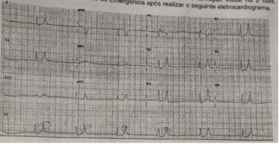
A Atropina.
B Encaminhar para marcapasso definitivo.
C Trombólise.
D Gluconato de cálcio.
E Marcapasso transcutâneo.
Questão 2 · Hipercalemia · Distúrbios eletrolíticos · 4000188526Você está de plantão e foi chamado para verificar os exames que caram prontos. O paciente do leito 114 apresenta uma hipercalemia aguda. O R2 que estava de plantão solicitou um eletrocardiograma. Qual alteração eletrocardiográ ca pode estar associada à hipercalemia?
A Redução do intervalo PR.
B Alargamento do complexo QRS.
C Achatamento da onda T.
D Onda Q proeminente.
Revisar: possível letra faltando em enunciado
Questão 3 · Manif estações clínicas da hipercalemia · 4000186777Dentre as alterações hidroeletrolíticas, a hipercalemia tem potencial risco fatal pela alteração em condução miocárdica e sua relação com arritmias fatais. Sobre a hipercalemia, assinale a melhor alternativa:
A O gluconato de cálcio é efetivo em reduzir a concentração sérica de potássio e deve ser administrado quando houver alterações eletrocardiográficas.
B A administração de bicarbonato de sódio é efetiva em reduzir a concentração sérica de potássio, porém sua administração apresenta potenciais riscos como hipervolemia e hipocalcemia.
C Alterações eletrocardiográficas graves como torsaides-point devem ser tratadas com medidas para expoliação de potássio, como diuréticos de alça e resinas de trocas gastro-intestinais.
D O apiculamento difuso de onta-T em pacientes com hipercalemia configura uma emergência dialítica.
E Na parada cardiorrespiratória por hipercalemia a administração de bicarbonato de sódio deve ser desencorajada.
Questão 4 · Manif estações clínicas da hipercalemia · Bicarbonato de sódio · Beta2Agonista · 4000186677No controle do paciente cirúrgico no pós-operatório um cuidado que devemos ter é nos distúrbios hidroeletrolíticos que podem ser fatais nos pacientes. Sobre esses distúrbios, assinale a alternativa CORRETA:
A A hiperpotassemia pode causar fraqueza muscular e a insuficiência respiratória é comum.
B Lesão tissular, hipoglicemia, acidose e aumento da ação da aldosterona são causas de hiperpotassemia.
C Ondas T em pico leva a pensar na possibilidade da hipocalemia.
D Pode-se tratar a hipercalemia com solução polarizante (insulina com glicose), bicarbonato de sódio ou agonista beta adrenérgico.
Questão 5 · Formas de reposição de potássio · Gravidade · 4000186550Paciente de 60 anos, operado em caráter de emergência por quadro suboclusivo intestinal (Tumor de ceco), tendo sido realizada colectomia D com ileostomia terminal. No quinto dia de pós-operatório encontrava-se estável, já em programação de alta hospitalar quando houve piora clínica, apresentando náuseas, vômitos, distensão abdominal e câimbras. O paciente estava em REG, afebril, hipocorado +/3 e desidratado ++/4. Abdome moderadamente distendido, timpânico, sem sinais de peritonismo, estoma bem perfundido, funcional, porém com volume diminuído em relação às últimas 48h, chamando atenção para os RHA (ruídos hidroaéreos) hipoativos. Considerando o quadro decorrente de íleo paralítico como hipótese, e que o principal eletrólito alterado no controle laboratorial foi o potássio, com níveis séricos de 2,3 mEq/L, podemos considerar das alternativas abaixo, qual a correta?
A Por tratar-se de hipopotassemia leve, a correção do distúrbio em questão deve ser realizada por via oral, considerando a necessidade diária basal de 5-a 10 mEq/Kg/dia com reposição oral média recomendada de 100 mEq/dia.
B A concentração máxima de K+ administrada não deve ultrapassar 40mEq/L em veias periféricas e 60mEq/L em acesso central.
C A velocidade de infusão durante a reposição, independente de via periférica ou central, não deve ultrapassar 60mEq/h, como também ser mantido para não interferir nas metas calculadas para o nível plasmático.
D Em situações de hipopotassemia ref - deve ser verificado, pois ele interfere como cofator da Na+-k+-ATPase.
Questão 6 · Neuromusculares · Cardiovasculares · Hipocalemia · 4000185876Homem de 32 anos procura emergência por cãibras e mialgia intensa iniciadas após diarreia, com diversos episódios de evacuações líquidas nos últimos dois dias, associados a febre e vômitos. Ao exame físico, apresentava-se desidratado, taquicárdico, normotenso, apresentando dor à palpação muscular difusamente. Eletrocardiograma evidenciou presença de ondas U de V4 a V6. Qual distúrbio hidroeletrolítico está associado ao quadro e qual o motivo da dor?
A Hipopotassemia. Rabdomiólise isquêmica secundária a hipopotassemia.
B Hipopotassemia. Miosite secundária à gastroenterocolite presumivelmente viral.
C Hiperpotassemia. Miosite secundária à gastroenterocolite presumivelmente bacteriana.
D Hipocalcemia. Rabdomiólise secundária à sepse.
E Hipocalcemia. Miosite secundária à gastroenterocolite presumivelmente viral.
Questão 7 · Nef rologia · 4000185481Durante o pré-operatório de pacientes oncológicos que serão submetidos ao tratamento cirúrgico observa-se, com relativa frequência, a ocorrência de hipocalemia. Nestes casos, é CORRETO afirmar que:
A A realização de um eletrocardiograma é recomendada, pois poderá mostrar, na maioria das vezes, elevação do segmento ST e aparecimento da onda U
B A reposição intravenosa de potássio está sempre indicada para evitar as complicações da hipocalemia
C Os níveis reduzidos de potássio podem levar à fraqueza muscular
D Os pacientes apresentam maiores chances de arritmia cardíaca devido a hipopolarização do potencial de repouso das células
Questão 8 · Tratamento da hipercalemia · Manif estações clínicas da hipercalemia · Gluconato de cálcio · 4000185451Homem, 64 anos, foi admitido no pronto-socorro com quadro de fraqueza nas pernas e palpitações há dois dias, tendo apresentado síncope há duas horas. É portador de diabetes estágio 3b e miocardiopatia isquêmica com fração de ejeção levemente reduzida. Faz uso contínuo de insulina NPH, losartana, carvedilol e AAS, com uso esporádico de furosemida. Há 15 dias, foi associada espironolactona pelo antecedente de miocardiopatia. Na admissão, paciente encontra-se com PA = 110 x 70 mmHg, taquipneico leve e euvolêmico. O eletrocardiograma realizado na admissão está ilustrado a seguir. Com base no exposto, assinale a afirmativa correta.
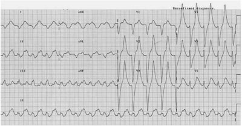
A A principal medida a ser realizada é encaminhar o paciente para trombólise ou angioplastia primária.
B O uso de diurético de alça é contraindicado pelo risco de agravamento do quadro cardíaco.
C A infusão de gluconato de cálcio endovenoso terá efeito protetor sobre as células miocárdicas.
D A administração de amiodarona endovenosa é essencial para a prevenção de arritmias graves nesse paciente.
E A administração de insulina e glicose está contraindicada pelo risco elevado de hipoglicemia.
Questão 9 · Hipocalemia · 4000183790Paciente de 39 anos, portador de HIV, com CD4 de 120 cels/mm³ está internado na sua enfermaria com quadro de diarreia. Os últimos exames laboratoriais apontaram um potássio de 2,4 mmol/L. Sobre a hipocalemia desse paciente, assinale a alternativa
A Caso esse paciente não responda a reposição de potássio devemos considerar a possibilidade de existência de hipomagnesemia associada.
B O Déficit corporal total estimado de potássio desse paciente é em torno de 50 mEq.
C O paciente deve receber reposição oral de potássio com uso de Xarope de KCL a 20%, 20 ml a cada 6 horas.
D A solução de KCl a 19,1% apresenta uma concentração em torno de 50mEq por litro.
Questão 10 · Manif estações clínicas da hipercalemia · 4000183740O potássio é o principal cátion intracelular do corpo e tem importante papel na manutenção da osmolaridade celular, no equilíbrio ácido-básico, na síntese de proteínas entre outras funções. A respeito dos distúrbios do potássio, assinale a alternativa
A São causas de hipocalemia: uso de diuréticos, digitálicos, gluconato de cálcio, insulina e bicarbonato.
B A hipercalemia pode manifestar-se eletrocardiograficamente através de ondas T altas, apiculadas e simétricas, redução da amplitude das ondas P e alargamento do intervalo PR e do complexo QRS.
C A hipocalemia pode manifestar-se clinicamente com íleo paralítico, retenção urinária, letargia e eletrocardiograficamente com aparecimento de ondas U, elevação do segmento ST e redução da amplitude das ondas T.
D O tratamento da hipocalemia deve ser iniciado imediatamente por via venosa quando o nível sérico de potássio estiver abaixo de 3,5mEq/litro.
Questão 11 · Manif estações clínicas da hipercalemia · Desviar o potássio para dentro das células · 4000183073Remover o potássio do organismo Paciente do sexo masculino, 34 anos, vítima de atropelamento em via pública, apresentando fratura de bacia e lesão tipo esmagamento de membro inferior direito com fraturas de fêmur e tíbia. Foi submetido a cirurgia ortopédica para xação da fratura de bacia e estabilização das fraturas, sendo hidratado com Ringer Lactato e transfundido 3 concentrados de hemácias. Evoluiu com insu ciência renal aguda no pós-operatório, sendo solicitado parecer do nefrologista. O paciente, porém, apresentou quadro de fraqueza muscular importante e dor torácica. À ausculta torácica, observamos ritmo cardíaco irregular (arritmia), sendo realizado um ECG que evidenciou onda T apiculada e bloqueio átrio-ventricular. Sobre o provável distúrbio eletrolítico deste paciente e sua condução, assinale a alternativa
A No caso acima, é provável que a administração de enzimas de troca catiônica a nível intestinal seja mais efetiva que a hemodiálise no tratamento da urgência descrita acima.
B Podemos inferir que a intensa lise celular ocorrida associada a inadequada compensação hidroeletrolítica renal foram eventos que contribuíram para a descompensação cardíaca descrita.
C A medida clínica imediata para tratamento deste paciente inclui a administração endovenosa de gluconato de cálcio a 10%.
D A administração de solução polarizante composta por glicose hipertônica e insulina atua na correção rápida do distúrbio descrito acima.
Questão 12 · Tratamento da hipercalemia · Nef rologia · 4000182760Em relação ao tratamento da hipercalemia grave, analisar os itens abaixo: I. A insulina promove a entrada do Potássio (K) na célula, corrigindo a hipercalemia. II. A administração de glicose hipertônica associada à insulina no tratamento da hipercalemia evita a hipoglicemia. III. A administração intravenosa de bicarbonato de sódio está indicada para evitar arritmia na hipercalemia. Estão CORRETOS:
A Somente os itens I e II.
B Somente os itens II e III.
C Somente os itens I e III.
D Todos os itens.
Questão 13 · Síndrome de Lise Tumoral SLT · Síndrome de lise tumoral SLT · 4000192868Paciente, em início de quimioterapia para linfoma não Hodgkin, apresenta náuseas, vômitos, cãibras, fraqueza muscular e redução do volume urinário. Qual(is) das seguintes alterações eletrocardiográ cas é (são) compatível (is) com a principal hipótese diagnóstica?
A Aumento do intervalo QT.
B Aumento de onda P e redução do intervalo PR.
C Infradesnivelamento de segmento ST e diminuição do intervalo QT.
D Inversão e achatamento de onda T.
E Supradesnivelamento de segmento ST e diminuição do intervalo QT.
Revisar: possível letra faltando em enunciado
Questão 14 · Neuromusculares · Cardiovasculares · Diuréticos · 4000191165Paciente sexo masculino, 69 anos, deu entrada na emergência com fraqueza muscular intensa. Antecedente pessoal: furosemida 80 mg/dia. Exame físico: Peso 70 Kg, estatura 1,50m, FC= 64 bpm, PA= 112x68 mmHg, apresentando o ECG abaixo: Assinale o diagnóstico mais provável:
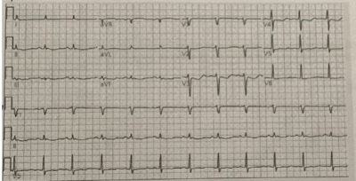
A Hipocalcemia.
B Hipomagnesemia.
C Hipocalemia.
D Hipoglicemia.
E Hipofosfatemia.
Questão 15 · Manif estações clínicas da hipercalemia · Perda da Capacidade de eliminação renal · Nef rologia · 4000177576Paciente feminina, 77 anos, após cistectomia radical, foi submetida à reconstrução urinária por meio de ureterojejunostomia externa. Após um mês do procedimento, vem apresentando fraqueza muscular. Ao exame físico, constatou-se que sua pressão arterial estava 108 x 77 mmHg e não havia edemas. Os resultados de seus exames foram os seguintes: creatinina sérica = 0,8 mg/dL; ureia = 120 mg/dL; sódio = 135 meq/L, calcemia normal. O resultado do eletrocardiograma está reproduzido abaixo. Com base nesse caso e considerando que ainda haja outros exames pendentes da primeira avaliação (potássio, magnésio e gasometria arterial), é mais provável evidenciar a associação de

A acidose metabólica e hipomagnesemia.
B alcalose metabólica e hiperpotassemia.
C acidose metabólica e hiperpotassemia.
D alcalose metabólica e hipocalemia.
Questão 16 · Aldosterona · Mecanismos de controle do potássio · Insulina · 4000176012Sobre o balanço interno do potassio ( disturbios do cátion entre o intra e o extracelular), quais das seguintes a rmativas é falsa?
A insulina - pois esta promove a entrada do potássio para o interior da célula independente do nível da glicose
B catecolaminas - pois diminui os níveis de potássio através dos receptores beta adrenérgicos
C aldosterona - promove a secreção de potássio e a absorção de sódio , ao nível do túbulo contornado proximal
D distúrbios hidroeletrolítico - em condições de acidose a entrada do potássio é dificultada, fazendo com que o íon se acumule no espaço extracelular
Questão 17 · Causas de Hipercalemia · 4000175874Uma senhora de 78 anos, com antecedentes de diabetes mellitus tipo 2, hipertensão arterial sistémica e dislipidemia procura atendimento com queixas de fraqueza muscular. Ela vem em uso de metformina de ação prolongada 2 g/dia, metoprolol 50 mg/dia, rosuvastatina 10 mg/dia e sulfametoxazol-trimetoprim 800-160 mg 2x ao dia há 7 dias para tratamento de infecção urinária. Ao exame físico: FC de 56 BPM, PA de 150 x 80mmHg, FR de 24 IRPM e Tax de 36,7ºC. Ritmo cardíaco regular em 3 tempos com 4ª bulha. Murmurio vesicular reduzido em bases de ambos os pulmões. Membros inferiores sem edema e sem sinais de trombose venosa. Exames complementares: Sódio 136 mEq/L, Potássio 7,6 mEq/L, Cloreto 108 mEq/L, Bicarbonato 18 mEq/L, Glicose 100 mg/dl; Uréia 50 mg/dl e creatinina 1,5 mg/dl (Clearence estimado pela fórmula CKD-EPI de 44 ml/minuto) Dentre as alternativas abaixo, assinale a que contém a causa da hipercalemia apresentada pela paciente:
A insuficiencia Renal aguda;
B insuficiencia Renal crônica;
C hipercalemia medicamentosa pelo trimetoprim;
D hipercalemia medicamentosa pelo
E hipercalemia medicamentosa pelo metoprolol.
Questão 18 · Tratamento da hipercalemia · Desviar o potássio para dentro das células · 4000175821Sobre o tratamento da hipercalemia relacionado a injúria renal aguda, marque a alternativa correta:
A Gluconato de cálcio sempre está indicado.
B Furosemida é uma droga muito usada nesse contexto pois redistribui o potássio no organismo.
C Pacientes com injúria renal aguda são proporcionalmente menos propensos a toxicidade da hipercalemia do que os portadores de insuficiência renal crônica.
D A infusão de glicose e insulina pode ajudar no tratamento da hipercalemia através do aumento da entrada de potássio no meio intracelular.
E nenhuma das respostas acima
Questão 19 · Gluconato de cálcio · 4000175679Lúcia, 45 anos, residente na Ilha do Marajó (PA), é trazida para internação hospitalar devido a sintomas urêmicos iniciados há dois dias após acidente ofídico crotálico, ocorrido durante atividade laboral. Na chegada, além de náuseas persistentes, notou-se redução do volume urinário. Os exames bioquímicos admissionais mostraram: ureia 126 mg/dL (VR: 10-45), creatinina 4,4 mg/dL (VR: 0,50-1,20), potássio 7,3 mmol/L (VR: 3,5-5,5) e sódio 134 mg/dL (VR: 135-145 mmol/L). O eletrocardiograma realizado apresentou: achatamento da onda P, o aumento do segmento PR e onda T apiculada (em tenda). A partir desses achados, a medida prioritária para estabilizar a membrana miocárdica, de forma a prevenir arritmias é a:
A Sulfato de Magnésio.
B Bicarbonato de sódio.
C Gluconato de cálcio.
D Cloridrato de propafenona.
E Propranolol.
Questão 20 · Manejo de sintomas · 4000175634Homem de 45 anos de idade em estágio 3 de doença renal crônica, tomando lisinopril para hipertensão arterial e insu ciência cardíaca com fração de ejeção reduzida. Vem a consulta de seguimento com edema pretibial e persistente discreta hipercalemia – 5,4 mEq/l (normal: 3,5-5,0), a despeito da dieta com restrição de potássio e em uso de 40 mg de furosemida uma vez ao dia. Sua creatina é de 1,5 mg/dl, seu nível basal é de 1,4 mg/dl (normal: 0,6-1,1). Qual dos seguintes passos seria mais apropriado no manejo da hipercalemia desse paciente?
A Trocar lisinopril por hidralazina.
B Aumentar a dose da furosemida.
C Iniciar poliestireno sulfonato de sódio.
D Trocar furosemida por clortalidona.
E Iniciar fludrocortisona.
Questão 21 · Causas de Hipocalemia · Furosemida · Diagnóstico da Hipocalemia · 4000169595Paciente do sexo masculino, 68 anos de idade, comparece ao ambulatório para acompanhamento de insu ciência cardíaca de etiologia isquêmica. Relata que perdeu seguimento devido à pandemia, e no momento encontra-se com dispneia para pentear o cabelo e escovar os dentes. Além disso, apresenta inchaço nas pernas e despertares noturnos por falta de ar. Nega febre ou sintomas de vias aéreas superiores, sendo que refere vacinação completa para COVID-19. Nega outras comorbidades. Está em uso de ácido acetilsalicílico, atorvastatina e furosemida. Ao exame clínico, apresenta pressão arterial de 110 x 70 mmHg, frequência cardíaca de 72 bpm, frequência respiratória de 16 ipm e saturação periférica de oxigênio de 94% em ar ambiente. Ausculta pulmonar com murmúrio vesicular preservado e estertores nos em bases. Seu ritmo cardíaco é regular e não apresenta sopros à ausculta. Apresenta também estase de veias jugulares a 45°, tempo de enchimento capilar < 3 segundos e edema de membros inferiores (3+/4+). Sem outras alterações. Apresenta ecocardiograma transtorácico que evidenciou fração de ejeção do ventrículo esquerdo de 38% e hipocinesia de parede anterior. Paciente retorna após seis meses de seguimento ambulatorial. Depois de sucessivos ajustes da s medicações, houve melhora substancial do quadro, sendo que mantém apenas sensação de fraqueza esporádica no momento. Os sinais vitais não têm alterações, sendo que o exame clínico evidenciou apenas edema de membros inferiores (+/4+). No momento, está em uso de ácido acetilsalicílico, atorvastatina, enalapril, carverdilol, espironolactona e furosemida. Realizado eletrocardiograma, cujo traçado pode ser visto na figura seguir: (Eletrocardiograma do paciente) Qual medicação está associada ao principal achado do eletrocardiograma?
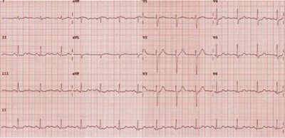
A Espironolactona
B Enalapril
C Carvedilol
D Furosemida
E Atorvastatina
Questão 22 · Absorção de potássio pelas células · Nef rologia · 4000168358Paciente de 39 anos foi internada para tratamento de complicações relacionadas a um linfoma. No prontuário, havia registro do peso da paciente (60 kg), da prescrição de soro siológico intravenoso a 0,9% (30 ml/hora) e uconazol para tratamento de candidíase sistêmica, além de um episódio de vômitos e câimbras no dia de hoje. Fez uso de lgrastima recentemente após o nadir da quimioterapia. Considerando o caso e os resultados dos exames abaixo, qual a principal causa para a hipotassemia?
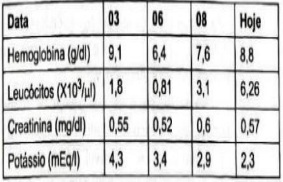
A Hiper-hidratação e diurese excessiva.
B Recuperação medular.
C Uso de fluconazol.
D Perda de secreções pelo trato gastrointestinal.
Questão 23 · Hemodiálise · 4000168200Um paciente de 70 anos, renal crônico em tratamento conservador (última creatinina = 4,8 mg/dl) foi submetido à cirurgia de urgência devido à diverticulite perfurada. No segundo dia de pós-operatório, desenvolveu oligúria e queixas de fraqueza muscular, embora estivesse com níveis pressóricos estáveis e sem sinais de níveis de infecção. Exames laboratoriais mostraram creatinina = 6,7 mg/dl e potássio = 7,5 mEq/l, ECG mostrava ondas T simétricas e apiculadas, com intervalo QRS discretamente alargado. Foram administrados, de imediato, gluconato de cálcio e solução de glicose e insulina. Qual a próxima medida a ser tomada?
A Hemodiálise
B Resinas de troca sônica
C Bicarbonato de sódio.
D Furosemida
E Expectante, monitorizando diariamente os níveis séricos de potássio
Questão 24 · Diarreia · Nef rologia · 4000167771Um paciente com 62 anos de idade apresenta alteração de hábito intestinal há um ano e perda ponderai de 15 kg em 2 meses. Nega ter realizado exames de rotina. No momento, apresenta diarreia intensa há 24 horas, com vários episódios de evacuações líquidas, associado a dor abdominal difusa. Ao exame físico, está desidratado, com FC = 115 bpm, FR =19 irpm, SatO2 = 97% e temperatura axilar = 37 °C. Considerando esse caso clínico e os conhecimentos médicos correlatos, julgue o item a seguir. O principal distúrbio hidroeletrolítico que o paciente pode apresentar no quadro de diarreia intensa é a alcalose metabólica hipopotassêmica.
A Certo.
B Errado.
Questão 26 · Causas de alcalose respiratória · Tireotoxicose gestacional transitória · 4000165634Formas de reposição de potássio Mulher de 31 anos de idade, secundigesta, nulípara, chega ao pronto atendimento referindo náuseas e vômitos intensos (3 a 4 episódios por dia). Refere data da última menstruação em 23/09/2021. Portadora de distúrbio de ansiedade em uso de Sertralina 100 mg por dia, chegou bastante agitada. Ao exame clínico, paciente em regular estado geral, desidratada 2+/ 4+, PA 90x62 mmHg, FC 124 bpm, rítmico, Saturação 98%. Exame ginecológico mostrou conteúdo vaginal siológico, colo impérvio e útero compatível com a idade gestacional. Foram colhidos os seguintes exames: Hb 11,4 g/dl; Ht 34,2%, Leucócitos 10,66mil/mm³; Plaquetas 268 mil/mm³; TSH 0,02 UI/ml, T4 total 8,2 mcg/dl; TGO 19U/L; TGP 28U/L; Cr 0,51 mg/dl; U 15 mg/dl; Na 136 mEq/L; K 3,0 mEq/L; PCR 0,06 mg/L; gasometria venosa (pH 7,47; pO₂ 80,1 mmHg; pCO₂ 29,2 mmHg; HCO₃ 29,1 mmol/L; BE +10). Eletrocardiograma: Além da prescrição de antiemético e hidratação, qual é a prescrição mais adequada no pronto atendimento?

A Reposição de bicarbonato endovenosa.
B Ofertar oxigênio em máscara aberta.
C Reposição de potássio endovenosa.
D Administrar diurético endovenoso.
Questão 27 · Cardiovasculares · Diagnóstico da Hipocalemia · 4000164844O eletrocardiograma abaixo é compatível com qual distúrbio hidroeletrolítico? Fonte: https://www.medicinanet.com.br/conteudos/casos/2026/eletrocardiograma_39.htm.
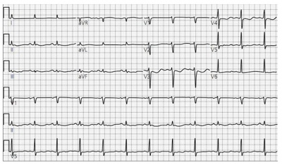
A Hipercalemia
B Hipocalemia
C Hiponatremia
D Hipomagnesemia
Questão 28 · Causas de Hipercalemia · Nef rologia · 4000164483É causa de hiperpotassemia, EXCETO:
A Uso de inibidor da enzima conversora da angiotensina.
B Acidose tubular renal tipo IV.
C Acidose tubular renal tipo II.
D Insuficiência adrenal.
Questão 29 · Perda Renal · Nef rologia · 4000164098Menina de 6 anos é levada para atendimento, pois há cinco dias apresenta fraqueza muscular e câimbras em membros inferiores, evoluindo para incapacidade de deambular. Nega febre ou diarreia. Ao exame físico, está pouco comunicativa, apresenta diminuição da força muscular e dos reflexos profundos em membros inferiores. Sensibilidade dolorosa e tátil normais. Restante do exame físico sem alterações. A bioquímica do sangue coletada mostrou: Na = 138mEq/L; K = 2,0mEq/L; Cl = 120mEq/L; HCO₃ = 10mEq/L; ureia e creatinina normais. O EAS evidenciou Ph = 6, traços de proteína, sem piúria ou hematúria. Para corroborar a principal hipótese diagnóstica desse caso, deve-se complementar os exames com:
A colonoscopia
B análise do líquor
C dosagem de potássio urinário
D ressonância de coluna vertebral
Questão 30 · Causas de Hipocalemia · 4000141013A hipocalemia aguda, devido à perda renal de potássio, e acompanhada de alcalose metabólica, deve ser, mais provavelmente, causada por:
A mineralocorticoides e aminoglicosídeos.
B ureterossigmoidostomia e diuréticos.
C diuréticos e mineralocorticoides.
D diarreia e mineralocorticoides.
E aminoglicosídeos e leucemia.
Questão 31 · Tratamento da hipercalemia · Hipercalemia · 4000124088Paciente de 62 anos, diabético, hipertenso, em uso de losartana e glimepirida, comparece a consulta ambulatorial de rotina assintomático, apresentando os seguintes resultados no exame de sangue: ureia = 56mg/dL, creatinina = 1,8mg/dL, potássio = 6,3mEq/L. Tendo em vista esses resultados, a conduta mais adequada é:
A iniciar furosemida, manter a losartana e retornar com novos exames em sete dias.
B infundir de solução de glicose com insulina na Emergência.
C suspender a losartana, iniciar dieta com restrição alimentos ricos em potássio e retornar em sete dias.
D suspender a losartana e solicitar ecodoppler de artérias renais.
E suspender a losartana e iniciar amilorida.
Questão 32 · Tratamento da hipercalemia · 4000088991Paciente de 9 anos, sexo feminino, com diagnóstico de insu ciência renal crônica secundária à nefrite lúpica, chega à emergência com queixa de edema em mãos e pés e diminuição do débito urinário há 24h. Avaliação clínica e laboratorial inicial mostram eletrocardiogra a com onda P achatada e onda T apiculada, além de potássio sérico de 7,1mEq/L. Para reduzir os níveis séricos de potássio, a melhor opção de tratamento é:
A vasopressina, na dose de 0,0001U/kg/min, por via intravenosa, associada à insulinoterapia
B glicose 10%, na dose de 1 g/kg, por via intravenosa, associada à insulinoterapia
C gluconato de cálcio 10%, na dose de 1ml/kg, por via intravenosa
D ringer lactato, na dose de 20ml/kg, por via intravenosa
Questão 33 · Tratamento da hipercalemia · Hipercalemia · 4000083001Homem, 27 anos, internado na UTI por quadro de choque séptico secundário à pneumonia grave, evoluiu com necessidade de ventilação mecânica e doses altas de vasopressor, além de piora progressiva da função renal. Exames laboratoriais de controle evidenciaram, entre outras alterações, hipercalemia. Entre as alternativas abaixo, a que NÃO reduz os níveis séricos de potássio é:
A Poliestirenossulfonato de cálcio por via retal.
B Diurético de alça.
C Gluconato de cálcio.
D Salbutamol por via inalatória.
Questão 34 · Distúrbios do potássio · 4000075497A respeito do tratamento dos distúrbios do potássio em pacientes adultos, assinale a alternativa CORRETA:
A Para pacientes com hipocalemia e necessidade do uso de diuréticos, podemos considerar o uso de amiloride.
B Dentre as medidas empregadas no tratamento da hipercalemia, a mais eficaz da redução dos níveis séricos de potássio é o uso de gluconato de cálcio.
C Um paciente com peso de 50 kg e com nível sérico de potássio de 2,0 mEq/dL apresenta um déficit corporal total de potássio de algo em torno de 50 mEq.
D Para pacientes com hipocalemia grave, com níveis séricos inferiores a 2 mEq/dL, a reposição deve ser realizada de modo rápido, com uma velocidade de 120mEq/ hora.
E Em casos de hipocalemia refrataria deve-se considerar a coexistência de hipocalcemia.
Questão 35 · Resinas de troca · 4000073747Um senhor de 58 anos procura o setor de emergência com quadro de tosse produtiva, febre e dispneia com início há 7 dias e com piora há 24 horas. Ao exame apresenta-se confuso, hipocorado (2+/4+), desidratado (2+/4+), frequência cardíaca de 116 batimentos por minuto, frequência respiratória de 30 impulsos por minuto e pressão arterial de 88 x 40 mmHg. Os exames complementares realizados mostram raio x de tórax com in ltrado alveolar em lobo superior do pulmão direito, contagem de leucócitos de 25.000 c/ 20% de bastões, gasometria arterial com pH: 7,37, PaO2: 50, PaCO2: 27, HCO3: 16, SaO2: 88%, dosagem sérica de ureia de 80 mg/dl, creatinina de 2,0 mg/dl e lactato sérico de 4 mmol/l. Foram colhidas 2 amostras de sangue para culturas, seguido da administração IV de 1g de ceftriaxona, 500mg de Claritromicina e cerca de 30ml/kg de ringer-lactato. Sua pressão arterial manteve-se a mesma, assim como os níveis de lactato. O paciente da questão anterior acaba evoluindo para insu ciência renal aguda oligúrica com hipercalemia de 7,5 mEq/L. Realizadas medidas terapêuticas à base de gluconato de cálcio, beta2 agonista inalatório e glicoinsulinoterapia. O próximo passo na terapêutica visa aumentar a eliminação de potássio do organismo. Assinale a alternativa que contém duas medidas capazes de eliminar o potássio corporal:
A Sevelamer e bicarbonato de sódio.
B Patiromer e sevelamer.
C Poliestireno sulfonato de sódio esevelamer.
D Poliestireno sulfonato de sódio e patiromer.
Questão 36 · Tratamento da hipercalemia · Manif estações clínicas da hipercalemia · 4000041831Paciente, sexo feminino, diabética de longa data, portadora de doença renal crônica estágio cinco, realiza hemodiálise como terapia renal substitutiva. Após faltar sua última sessão de hemodiálise, é admitida em serviço de urgência com paresia dos membros inferiores. Foi solicitado eletrocardiograma. O achado eletrocardiográfico, o distúrbio hidroeletrolítico implicado e a conduta imediata, respectivamente são:
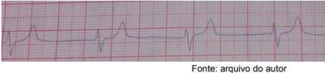
A fibrilação atrial, hipercalemia, amiodarona.
B ritmo juncional, hiperfosfatemia, hemodiálise.
C onda t em tenda, hipercalemia, gluconato de cálcio.
D ritmo sinusal, hipocalemia, cloreto de potássio.
E taquicardia ventricular polimórfica, hipomagnesemia, sulfato de magnésio.
Questão 37 · Distúrbios do potássio · 4000036547Em relação aos distúrbios de potássio, assinale a alternativa incorreta.
A Hipocalemia grave pode induzir arritmias e rabdomiólise.
B Onda T achatada e QRS estreito ao eletrocardiograma (ECG) sugerem hipercalemia.
C O gradiente de concentração transtubular de potássio (TTKG) é capaz de distinguir entre as perdas renais e as perdas não renais de potássio.
D A hipercalemia pode se desenvolver em pacientes que tomam inibidores da enzima conversora de angiotensina (IECA) e bloqueadores de receptores de angiotensina.
Questão 38 · Tratamento da hipercalemia · 4000033222Está indicado no tratamento da hipercalemia com alargamento do QRS.
A Solução de glicose + insulina.
B Bicarbonato de sódio.
C Gluconato de cálcio.
D Furosemida.
Questão 39 · Causas de Hipocalemia · 4000002487Das causas abaixo, qual a mais comum de hipopotassemia?
A Hiperaldosteronismo primário
B Hiperaldosteronismo secundário
C Síndrome de Gitelman
D Diarreia infecciosa
Questão 40 · Tratamento da hipercalemia · 4000122794Paciente, 78 anos de idade, encontra-se internado no hospital para tratamento quimioterápico de neoplasia gástrica avançada. Após receber a última infusão do esquema antineoplásico, o paciente vem apresentando quadro de náuseas, vômitos e hiporexia . Previamente hipertenso, diabético e portador de dor crônica, faz uso de metformina 850 mg. duas vezes ao dia, enalapril 20 mg de 12/12 horas e tramadol 100 mg de 6/6 horas. Os exames colhidos revelaram: creatinina sérica = 2,1 mg/dL; Uréia = 116 mg/dL; sódio = 146 mEq/L e potássio = 6,8 mEq/L. O eletrocardiograma é alterado pelo apiculamento e desproporção da onda T em relação ao QRS. Ao exame físico evidencia-se pressão arterial 96x55 mmHg, ausência de alterações na ausculta cardíaca e pulmonar, abdome globoso e hipertimpânico, com redução dos ruídos hidroaéreos e ausência de edema nos membros inferiores. Além da suspensão do enalapril, o manejo da hiperpotassemia desse paciente deverá incluir:
A Poliestirenossulfonato de cálcio, gluconato de cálcio endovenoso, fludrocortisona e solução de glico-insulina.
B gluconato de cálcio endovenoso, poliestirenossulfonato de cálcio, solução de glico- insulina e furosemida.
C hemodiálise e bicarbonato de sódio.
D hemodiálise, gluconato de cálcio endovenoso, bicarbonato de sódio e solução de glico-insulina.
E gluconato de cálcio, hidratação endovenosa, solução de glico-insulina e inalação do beta-agonista.
Questão 41 · Gluconato de cálcio · Distúrbios eletrolíticos · 4000112700Paciente do sexo feminino, 45 anos, internada por disfunção de cateter de hemodiálise, apresenta quadro de tonturas e desconforto torácico de início súbito enquanto descansava em seu leito. Ao exame físico, apresenta PA: 90 X 50 mmHg, FC: 40 bpm, SpO2: 91% com cateter nasal de O2, FR 22 ipm, ausculta cardíaca normal e ausculta pulmonar com discretos estertores crepitantes em bases. Com base nos dados ddo caso e do eletrocardiograma, conforme mostrado a seguir, qual a primeira droga seria indicada nesse caso?
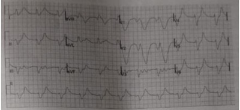
A Atropina.
B Gluconato de Cálcio.
C Furosemida.
D Bicarbonato de Sódio.
E Noradrenalina.
Questão 42 · Tratamento da Hipocalemia · Diagnóstico da Hipocalemia · 4000105809Paciente, 7 anos, com diagnóstico recente de síndrome nefrítica, em uso domiciliar de furosemida e dieta hipossódica, deu entrada no pronto-socorro referindo desconforto torácico. O exame cardíaco demonstrou taquicardia (FC = 150 bpm) e o exame pulmonar estava normal. Colhidos exames iniciais: Na = 146 mEq/L; K = 2,3 mEq/L; P = 2,9 mmol/L; Hb = 10 g/dl e presença de onda U proeminente no ECG. A conduta inicial mais adequada para este caso é:
A Correção do sódio.
B Reposição de fósforo.
C Adicionar potássio ao soro de manutenção.
D Correção do deficit de água livre.
E Correção de potássio.
Questão 43 · Gluconato de cálcio · Distúrbios eletrolíticos · 4000100660Mulher de 69 anos e portadora de Hipertensão Arterial, Diabetes tipo II com microangiopatia diabética instalada, chega à sala de emergência da Unidade de Pronto Atendimento com quadro de mal-estar inespecí co e queda do estado geral, com evolução de 2 horas. Apresenta o traçado eletrocardiográfico abaixo: A conduta imediata deve ser:
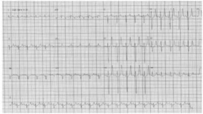
A Gluconato de cálcio.
B Furosemida.
C Bicarbonato de sódio.
D Angioplastia primária.
Revisar: possível letra faltando em enunciado
Questão 44 · Tratamento da hipercalemia · 4000079289Paciente, 78 anos de idade, encontra-se internado no HUOL para tratamento quimioterápico de neoplasia gástrica avançada. Após receber a última infusão do esquema antineoplásico, o paciente vem apresentando quadro de náuseas, vômitos e hiporexia. Previamente hipertenso, diabético e portador de dor crônica, faz uso de metformina 850 mg, duas vezes ao dia, enalapril 20 mg de 12/12 horas e tramadol 100 mg de 6/6 horas. Os exames colhidos revelaram: creatinina sérica = 2,1 mg/dL; Uréia = 116 mg/dL; sódio = 146 mEq/L e potássio = 6,8 mEq/L. O eletrocardiograma é alterado pelo apiculamento e desproporção da onda T em relação ao QRS. Ao exame físico, evidencia-se pressão arterial 96x55 mmHg, ausência de alterações na ausculta cardíaca e pulmonar, abdome globoso e hipertimpânico, com redução dos ruídos hidroaéreos e ausência de edema nos membros inferiores. Além da suspensão do enalapril, o manejo da hiperpotassemia desse paciente deverá incluir:
A poliestirenossulfonato de cálcio, gluconato de cálcio endovenoso, fludrocortisona e solução de glico-insulina.
B gluconato de cálcio endovenoso, poliestirenossulfonato de cálcio, solução de glico - insulina e furosemida.
C hemodiálise, gluconato de cálcio endovenoso, bicarbonato de sódio e solução de glico -insulina.
D gluconato de cálcio, hidratação endovenosa, solução de glico-insulina e inalação do beta- agonista.
Questão 45 · Succinilcolina · 4000078580Mulher, 58 anos, com insu ciência renal crônica dialitica, necessita de intubação orotraqueal devido a edema pulmonar, potássio (K+) sérico mais recente: 6,5 mEq/L. Neste caso, o uso da succinilcolina:
A Pode ser utilizado caso o eletrocardiograma (ECG) esteja normal.
B Deve ser utilizado para sequência rápida.
C É contraindicado.
D É seguro caso haja acidose.
Questão 46 · Causas de Hipocalemia · 4000027775No contexto cirúrgico, são responsáveis pela Hipocalemia as seguintes condições, com exceção de:
A administração excessiva de diuréticos
B perdas gastrointestinais
C acidose metabólica a sepse abdominal
D hepatopatias crônicas
E alcalose metabólica prolongada
Questão 47 · Gluconato de cálcio · 4000017967Paciente, 68 anos, sexo masculino, hipertenso, foi admitido no pronto-socorro com pneumonia grave. Nos exames admissionais, constavam creatinina = 1,8 mg/dl (VR: 0,7- 1,2); ureia = 157 mg/dl (VR: 10-50) e potássio = 7,2 mEq/L (VR: 3,5- 5,0). Foi, então, realizado eletrocardiograma, que evidenciou presença de onda T apiculada difusamente, encurtamento do intervalo QT e achatamento da onda P. LEGENDA: VR: Valor de Referência. Qual é o mecanismo de ação do primeiro medicamento a ser administrado nessa paciente?
A Estimular a caliurese.
B Estabilizar a membrana miocárdica.
C Trocar cálcio por potássio no trato gastrointestinal.
D Translocar potássio do meio extracelular para o intracelular.
Questão 48 · Tratamento da hipercalemia · 4000016532Paciente de 60 anos, hipertenso e diabético, em uso de losartan 50 mg 12/12 horas iniciado recentemente pelo cardiologista, vem ao pronto-socorro com quadro de edema de membros inferiores e dispneia leve. Refere volume urinário > 2 L/24 horas. Na investigação laboratorial foi detectado creatinina 2 mg/dl, ureia 70 mg/dl, potássio 7,0 mEq/L. Qual seria a conduta mais CORRETA, referente a condução do caso?
A Hemodiálise de urgência.
B Gluconato de cálcio IV apenas se houver alteração eletrocardiográfica.
C Manter a medicação em uso e prescrever solução de glicose e insulina.
D Administração de bicarbonato de sódio 8,4% IV.
E Furosemida IV isoladamente.
Questão 49 · Rabdomiólise · Liberação da carga de potássio do intracelular · 4000011672Paciente no terceiro pós-operatório de ponte aorto-bifemoral evoluiu com rabdomiólise, apresentou a seguinte alteração eletrocardiográfica. Qual distúrbio eletrolítico é mais provável?
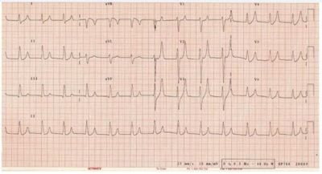
A Hipocalcemia.
B Hipocalemia.
C Hipercalemia.
D Hipercalcemia.
Questão 50 · Manif estações clínicas da hipercalemia · 4000010213Paciente 58 anos, sexo masculino, diabético, hipertenso e portador de doença renal crônica estágio V, deu entrada na emergência com mal-estar e fraqueza muscular intensa. Foi colhido exames laboratoriais e realizado eletrocardiograma que apresentou achatamento da onda P, onda T apiculada e QRS alargado. De acordo com essas informações, qual o provável distúrbio hidroeletrolítico apresentado pelo paciente?
A Hipocalemia.
B Hiponatremia.
C Hipercalemia.
D Hipercalcemia.
E Hiperfosfatemia.
Questão 51 · Tratamento da Hipocalemia · 4000005953Assinale a alternativa que apresenta o tratamento CORRETO para um paciente de 12 anos, que apresenta íleo paralítico e ECG com onda U proeminente e inversão de onda T.
A Resina de troca de potássio (sorcal).
B Solução polarizante + salbutamol.
C Correção de sódio com NaCl 20% 5 meq/K cal/hora.
D Correção de potássio com cloreto de potássio 19,1% endovenoso.
Questão 52 · Tratamento da hipercalemia · Glicoinsulina · 4000128232Em relação às alterações do potássio no organismo, assinale alternativa ERRADA:
A A administração venosa de cálcio pode reduzir imediatamente o risco de arritmia cardíaca ocasionada pela hipercalemia
B A hipomagnesemia pode determinar hipocalemia refratária
C A infusão de insulina e glicose diminui rápida e drasticamente o potássio corporal total
D Ondas T mais altas que ondas R indicam hipercalemia grave
Questão 53 · Tratamento da Hipocalemia · 4000127534Paciente de 11 meses com defeito septo interventricular (CIV), em uso domiciliar de furosemida e seguimento com cardiologista, deu entrada no pronto-socorro taquipneico e taquicárdico, FC: 182 bpm, Na: 136 mEq/L; K: 2,7 mEq/L; P: 2,9 mmol/L; Hb: 9,5 g/dL e presença de onda U proeminente no ECG. A conduta inicial adequada é
A corrigir rapidamente P.
B iniciar soro de manutenção para reposição de K.
C corrigir rapidamente o K.
D iniciar soro de manutenção com P e K.
E fazer dose extra de furosemida.
Questão 54 · Tratamento da hipercalemia · Desviar o potássio para dentro das células · Proteção cardíaca · 4000117876Um paciente, após o tratamento inicial, apresenta controle dos sintomas. Está calmo e sem novo episódio de crise convulsiva. Os exames laboratoriais solicitados anteriormente revelaram: Hb de 12 g/dl; Ht de 39%; leucócitos de 8.500 mm³; plaquetas de 145.000 mm³; ureia de 97 mg/dl; creatinina de 1,7 mg/dl; sódio de 149 mEq/L; potássio de 7 mEq/L; e CPK de 5.500 U/L. Foi realizado também o ECG mostrado abaixo. Considerando essa situação hipotética, assinale a alternativa que apresenta a conduta imediata CORRETA:
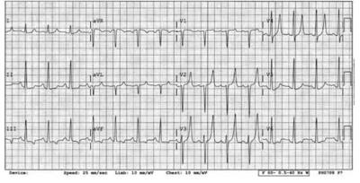
A Hidratação, bicarbonato de sódio e manitol.
B Hemodiálise.
C Gluconato de cálcio, inalação com beta-2-agonista e furosemida.
D inalação com beta-2-agonista, furosemida, solução de glicoinsulina epoliestirenossulfonato de cálcio (sorcal®).
E Gluconato de cálcio, inalação com beta-2-agonista, solução de glicoinsulina e hidratação.
Questão 55 · Causas de Hipocalemia · 4000075056Entre os distúrbios hidreletrolíticos no pós-operatório do paciente em UTI, à hipocalemia é mais frequentemente associada com
A hipocalcemia.
B hiponatremia.
C hipomagnesemia.
D hipocloremia.
Questão 56 · Tratamento da hipercalemia · Gluconato de cálcio · Proteção cardíaca · 4000066190Paciente com insu ciência cardíaca e fração de ejeção reduzida é submetido à hemicolectomia esquerda devido a um adenocarcinoma. No segundo dia de pós- operatório, apresenta vômitos alimentares e distensão abdominal. O exame físico mostra paciente hipocorado 1+/4+, mucosas hidratadas, crepitações em bases pulmonares, edema periférico 2+/4+ e distensão abdominal moderada, com fezes em ampola retal e ausência de descompressão dolorosa. PA = 90 x 60 mmHg; FC = 90 bpm e FR 20 = irpm. Houve diurese de 1.200 ml nas últimas 24h. Exames laboratoriais mostram hemoglobina = 8,5 g/dl; leucometria = 12.000 cél/mm³ (5% bastões e 70% neutró los); plaquetas = 500 mil/mm³; ureia = 190 mg/dl; creatinina = 4,8 mg/dl; sódio = 128 mEq/L e potássio = 6,5 mEq/L. Em relação aos distúrbios hidroeletrolíticos, assinale a a rmativa CORRETA.
A Deve-se realizar reposição de sódio com solução salina hipertônica a 3%, a fim de evitar congestão sistêmica.
B Há indicação de hemodiálise imediata.
C Iniciar o bicarbonato de sódio, pois é uma opção melhor que a glicoinsulinoterapia.
D Administrar furosemida em dose alta, que corrige tanto o distúrbio do sódio como do potássio.
E Deve ser iniciado gluconato de cálcio e glicoinsulinoterapia.
Questão 57 · Manif estações clínicas da hipercalemia · 4000064478Paciente sexo masculino, portador de IRC em hemodiálise admitido na emergência com fraqueza muscular, parestesias e diminuição de reflexos. ECG na admissão evidenciou onda T apiculada, plolongamento do intervalo PR, alargamento do intervalo QRS e achatamento de onda P. Exames laboratoriais em andamento. Qual o diagnóstico?
A hiperpotassemia
B hipopotassemia
C hiponatremia
D hipercalcemia
Questão 58 · Manif estações clínicas · 4000045058É manifestação de hipopotassemia:
A Íleo adinâmico.
B Supra-desnivelamento do segmento ST nas precordiais direitas.
C Aumento da taxa de filtração glomerular.
D Acidose metabólica.
E Insuficiência renal não oligúrica.
Questão 59 · Tratamento da hipercalemia · Hipercalemia · 4000043436Um paciente de 70 anos, renal crônico em tratamento conservador (última creatinina = 4,8 mg/dl) foi submetido à cirurgia de urgência devido à diverticulite perfurada. No segundo dia de pós-operatório, desenvolveu oligúria e queixas de fraqueza muscular, embora estivesse com níveis pressóricos estáveis e sem sinais de níveis de infecção. Exames laboratoriais mostraram creatinina = 6,7 mg/dl e potássio 7,5 mEq/l, ECG mostrava ondas T simétricas e apiculadas, com intervalo QRS discretamente alargado. Foram administrados, de imediato, gluconato de cálcio e solução de glicose e insulina. Qual a próxima medida a ser tomada?
A Hemodiálise
B Resinas de troca sônica
C Bicarbonato de sódio
D Furosemida
E Expectante, monitorizando diariamente os níveis séricos de potássio
Questão 60 · Causas de Hipocalemia · 4000039055Homem, 50 anos, hipertenso e diabético, em uso prévio de clortalidona, enalapril, ácido acetil salicílico e metformina, admitido com quadro de vômitos, diarréia e febre há 3 dias. Ao exame apresenta-se desidratado, hipotenso, FC de 120 bpm, FR 30 irpm e abdome dolorido. Exames de urgência com creatina de 3,0 mg/dL, ureia a 150 mg/dL, sódio 128 mmol/L, potássio 2,6 mmol/L, ph 7,55, HCO3 32 mEq/L, PaCO 235 mmHg, PO 2 60 mmHg, SatO 290 em ar ambiente. Diante desse caso, quais as possíveis causas da hipocalemia?
A Uso de tiazídico, diarreia e vômitos levando a alcalose metabólica;
B Lesão renal aguda, diarréia, uso de metformina e enalapril;
C Uso de inibidor de enzima conversora de angiotensina(IECA), alcalose metabólica e diarreia;
D Uremia, alcalose respiratória, uso de tiazidico e de metformina.
Questão 61 · Manif estações clínicas · Perda gastrointestinal · Diagnóstico da Hipocalemia · 4000036157Homem é admitido em pronto socorro com quadro de vômitos e diarreia há cerca de 5 dias. Antecedente recente de ingesta alimentar duvidosa. Nega febre, refere múltiplas evacuações aquosas e vômitos, ambos sem muco ou sangue. A alteração eletrolítica e eletrocardiográfica mais esperada é, respectivamente:
A Hipocalemia e onda U.
B Hipercalemia e onda T apiculada.
C Hiponatremia e onda de Osborn.
D Hipernatremia e intervalo QT prolongado.
Questão 62 · Tratamento da Hipocalemia · Hipocalemia grave · 4000029685Criança com 2 anos de idade, em pós-operatório imediato de cirurgia para correção de Comunicação Interventricular, tendo sido submetida a 120 minutos de circulação extracorpórea, apresenta os seguintes resultados de exames laboratoriais: K: 2,0mmol/L; Na: 134mmol/L; HCO3-: 13mmol/L; Ca Iônico: 0,8mmol/L. Qual a correção MAIS URGENTE nesse caso?
A Ca++
B K+
C HCO3-
D Na+
E Tanto faz, as correções podem acontecer ao mesmo tempo sem risco adicional para o paciente.
Questão 63 · Resinas de troca · 4000029375Entre as medidas usadas no tratamento da hipercalemia, assinale a que NÃO tem como objetivo a troca de compartimento do potássio e nem a estabilização de membrana.
A Gluconato de cálcio a 10% -10 a 20mL + SF0,9%100mL EV
B Resina de troca
C Solução polarizante - insulina regular 10UI + glicose a 50% 100mL EV
D Beta 2 adrenérgico
E Bicarbonato de sódio a 8,4% 1meq/kg
Questão 64 · Manif estações clínicas da hipercalemia · Causas de Hipercalemia · 4000028638Observe o ECG abaixo: Os achados nesse ECG podem estar presentes em pacientes com qual das situações clínicas abaixo?
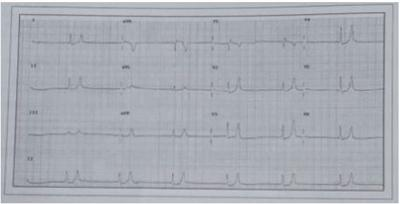
A Infusão rápida de insulina IV.
B Síndrome de Gitelman.
C Nefropatia diabética.
D Doença de Cushing.
E Síndrome de Fanconi.
Questão 65 · Desviar o potássio para dentro das células · Glicoinsulina · 4000020575Paciente de 13 anos, previamente hígido, chega a emergência com histórico de três dias de febre, adinamia e mialgia intensa e generalizada. Ao exame, encontra-se em regular estado geral, acianótico, pálido, anictérico, afebril, eupneico, com boa perfusão periférica e pulsos cheios. Aparelhos cardiovasculares e respiratórios sem alterações; abdome doloroso à palpação super cial e profunda, RHA +; dor à palpação da musculatura esquelética; sem sinais meníngeos; oroscopia com hiperemia e aumento de tonsilas palatinas, sem placas. Seus exames laboratoriais são potássio de 7 mEq/l e gasometria com pH igual a 7,39. Já foi realizado gluconato de cálcio para estabilizar as bras miocárdicas, na sequência, para dar continuidade ao tratamento da hiperpotassemia, decide-se utilizar medicamentos que promovam a entrada de potássio na célula, aumentando sua concentração intracelular, tais como:
A Sorcal e Insulina Simples.
B Bicarbonato de Sódio e Furosemida.
C Furosemida e Nitroprussiato De Sódio.
D Insulina Simples e Salbutamol.
Questão 66 · Distúrbios do potássio · 4000020544Sobre os Distúrbios do Potássio, é correto afirmar que:
A A hiperpotassemia pode ser causada pela administração de antagonistas de receptor mineralocorticoide e beta- adrenérgicos.
B Na hipercalemia, observa-se aumento de amplitude das ondas P e U, no eletrocardiograma.
C Redistribuição para o espaço intracelular, acidose e estado anabólicos podem causar hipocalemia.
D A hiperpotassemia despolariza a membrana celular do miocárdio, torna mais lenta a condução ventricular e reduz a duração do potencial de ação. ida oib pr ed
Questão 67 · Hiperaldosteronismo · Hiperaldosteronismo primário · Hiperaldosteronismo · 4000018746Paciente do sexo masculino, 64 anos, hipertenso e diabético de longa data, PO tardio de revascularização miocárdica, miocardiopatia isquêmica com fração de ejeção discretamente reduzida, insu ciência renal crônica ainda sem terapia dialítica e proteinúria de 6 g em 24h. Faz uso de losartan 100 mg/dia, bisoprolol 10 mg/dia, AAS 100 mg dia, furosemida 40 mg/dia, rosuvastatina 20 mg/dia, mononitrato de isossorbida 40 mg/dia, trimetazidina 70 mg/dia e reposição oral de potássio. Internado no CTI por piora da dispneia com BNP bastante elevado; Creatina = 3,6; Ureia = 190; alcalose metabólica e potássio = 2,1.
A Sem dúvidas essa dosagem de potássio está errada, deve ser repetida, afinal não é possível haver hipocalemia em um paciente com insuficiência renal, usando losartan e betabloqueador.
B É um quadro clássico de hipoaldosteronismo hiporreninêmico, evidenciado claramente pela alcalose metabólica e pela hipocalemia.
C Inicialmente poderia até se pensar em atribuir a hipocalemia ao uso da furosemida, mas a presença de alcalose metabólica afasta definitivamente essa possibilidade.
D É um possível caso de hiperaldosteronismo primário associado aos problemas já existentes, onde uma elevada atividade da renina plasmática e níveis elevados de aldosterona plasmática auxiliam na confirmação do diagnóstico. Além disso, um exame de imagem das supra-renais é fundamental.
E É um possível caso de hiperaldosteronismo primário associado aos problemas já existentes, onde uma atividade da renina plasmática bastante reduzida e níveis elevados de aldosterona plasmática auxiliam na confirmação do diagnóstico. Além disso, um exame de imagem das supra-renais é fundamental.
Questão 68 · Manif estações clínicas da hipercalemia · 4000010911Durante avaliação de paciente com insu ciência renal crônica, foi suspeitado de hiperpotassemia, sendo que o ECG pode diagnosticar essa situação. Um dos itens se mostra INCORRETO quanto a descrição dos achados. Assinale-o:
A As alterações dependem dos níveis séricos do potássio e as alterações ocorrem sequencialmente.
B Onda T de grande amplitude, simétrica e de base alargada.
C Redução do intervalo QTc.
D Distúrbio de condução intraventricular (QRS alargado).
Questão 69 · Manif estações clínicas da hipercalemia · Hipercalemia · Hipocalemia · 4000008395Levando-se em consideração os distúrbios do potássio, assinale a afirmativa CORRETA.
A A presença de ECG com aumento de amplitude da onda U indica um potássio sérico maior que 6,0 mEq/L.
B A presença de onda T apiculada e o encurtamento do intervalo QT indica um potássio sérico entre 5,5-6,5 mEq/L.
C O emprego de salbutamol se faz somente por via endovenosa.
D A sintomatologia da hipocalemia é precoce e surge com níveis de potássio sérico menores que 3,0 mEq/L.
Questão 70 · Hipocalemia · Causas de Hipocalemia · 4000004929O potássio é o principal íon intracelular, e o sódio o principal íon extracelular. Com base nessas informações, assinale a alternativa INCORRETA em relação à Hipocalemia:
A Paralisia flácida com comprometimento respiratório pode ocorrer quando potássio está abaixo de 2 mmol/L.
B Hipermagnesemia pode ser a causa de hipocalemia refratária.
C No eletrocardiograma pode ocorrer depressão de onda T e ondas U.
D Sintomas clínicos são fadiga, fraqueza e íleo.
Questão 71 · Inibidores do sistema reninaangiotensinaaldosterona · Drogas · 4000108031Qual desses medicamentos não deve ser utilizado em paciente com insuficiência renal aguda e hipercalemia?
A Furosemida.
B Poliestirenosulfonato de cálcio.
C Enalapril.
D Ácido acetilsalicílico.
E Dexametasona.
Questão 73 · Causas de Hipocalemia · 4000084862São causas de hipopotassemia, EXCETO:
A Doença de Addison.
B Síndrome de Bartter.
C Síndrome de Gitelman.
D Leptospirose.
E Síndrome de Liddle.
Questão 74 · Tratamento da hipercalemia · Manif estações clínicas da hipercalemia · 4000081254O senhor Antônio tem cirrose hepática e faz uso de espironolactona. Passou a sentir desconforto torácico e palpitações. O residente que o acompanha decidiu solicitar um elocardiograma, representado abaixo, que mostra ausência de onda P q onda T apiculada. O provável distúrbio encontrado no sr. Antônio, bem como a conduta mais adequada são, respectivamente:
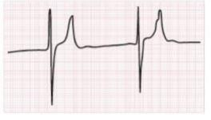
A Hiperfosfatemia e hemodiálise
B Hipomagnesemia e gluconato de cálcio
C Hiperpotassemia e solução de glicoinsulinia
D Hipopotassemia e furosemida
E Acidose metabólica e bicarbonato de sódio Modificado de Cecil tratado de Medicina Interna, 23a edição
Questão 75 · Distúrbios do potássio · 4000050441Os distúrbios do metabolismo do potássio são muito frequentes na prática clínica diária. Sobre estas situações clínicas, assinale a alternativa ERRADA:
A Dentre as causas de hiperpotassemia, temos o uso de medicamentos como o fenoterol, insulina, reposição de vitamina B12, além de alcalose metabólica e situações clínicas, como a síndrome de Cushing e tireotoxicose.
B Como causas de hipopotassemia, temos perdas pelo trato gastrointestinal, diarreias, preparo de colonoscopia, pólipos secretores, vipomas, náuseas e vômitos.
C Os achados clínicos de hipopotassemia são fraqueza generalizada, íleo paralítico, distúrbios do ritmo cardíaco, como alterações eletrocardiográficas como o aparecimento de onda U, achatamento da onda T, depressão do segmento ST, arritmias, atividade elétrica sem pulso e assistolia.
D O gluconato de cálcio a 10% é indicado quando temos quaisquer alterações eletrocardiográficas compatíveis com hiperpotassemia, independentemente do nível sérico de potássio, não devendo, porém, ser usado de maneira profilática.
E Outras situações que podem causar hiperpotassemia são o uso de anti-inflamatórios não esteroides, antagonistas dos receptores da angiotensina II, diuréticos como a amilorida de espironolactona, inibidores de ECA, além de outras medicações como ciclosporina pentamidina, ou trimetoprima em altas doses.
Questão 76 · Tratamento da hipercalemia · 4000026021Paciente, 75 anos, portador de insu ciência renal em acompanhamento ambulatorial, é admitido no Hospital Evangélico e já na emergência é vítima de Parada Cardiorrespiratória (PCR) sendo prontamente reanimado pela equipe SAVI. São prontamente iniciados os cuidados pós-ressuscitação onde são achados os seguintes exames: ECG: ritmo sinusal. Ondas T apiculadas. Ureia = 349; creatinina = 10; K = 8,2; Ph = 7,1; bicarbonato = 8; glicose = 380. No manejo desse paciente é INCORRETO afirmar que:
A A administração de insulina venosa, além do controle glicêmico, deve contribuir para a redução parcial da calemia
B O gluconato de cálcio deve ser administrado, apesar de não reduzir a calemia
C A furosemida será provavelmente pouco útil, em virtude da avançada disfunção renal
D O bicarbonato é contraindicado nesse caso, pois, em pacientes pós-PCR e com acidose metabólica, pode corrigir a acidose mas agravar a hipercalemia
E Após as medidas iniciais de controle emergencial da hipercalemia, uma hemodiálise de urgência deve ser tentada assim que possível
Questão 77 · Causas de Hipercalemia · 4000015070Assinale a alternativa que não representa causa de hipercalemia.
A Uso de inibidores da enzima conversora de angiotensinas.
B Síndorme neuroléptica maligna.
C Insuficiência renal terminal.
D Hiperaldosteronismo.
E Hemólise.
Questão 78 · Manif estações clínicas da hipercalemia · Diálise de urgência · Hipercalemia · 4000126887Uma mulher com 38 anos de idade deu entrada em uma Unidade de Emegência apresentando dispneia e dor torácica. O quadro teve início 5 dias antes com tosse seca, dor torácica à direita e febre alta. No dia seguinte ao início do quadro, ela procurou assistência médica tendo-lhe sido prescrito tratamento com levo oxacina para pneumonia bacteriana comunitária. A paciente relatou evolução com manutenção do quadro febril e das demais queixas; posteriormente, passou também a se sentir cansada, dispneica e com dor precordial tipo pleurítica. Como não viu melhora no quadro, procurou a Unidade de Emergência onde se encontra no momento. No primeiro atendimento na Unidade de emergência, a paciente negou tabagismo, etilismo, e uso de drogas ilícitas. Sua história patológica pregressa revela apenas cistites de repetição com último episódio há 2 meses, sempre tratadas com quinolona por via oral. Ao exame físico, apresentou pressão arterial = 85 x 40 mmHg; frequência cardíaca = 120 bpm; frequência respiratória = 28 irpm; temperatura = 38,7 °C; exame pulmonar compatível com condensação lobar à direita. Foi iniciada oxigenioterapia sob máscara e considerado o diagnóstico de sepse através dos critérios clássicos (síndrome de resposta inflamatória sistêmica com infecção comprovada ou suspeita). Foram colhidas hemoculturas, o lactato sérico foi dosado, o esquema antibiótico foi modi cado para cefalosporina de terceira geração + macrolídeo e foi iniciado resgate volêmico generoso. Os exames complementares realizados confirmam a existência de disfunção orgânica grave, com presença de 3 disfunções no escore SOFA (sequential organ-failure assessment): graveinjúria renal, com creatinina sérica = 5,8 mg/dL; hipercalemia acentuada, com K+ sérico = 7,2 mEq/L; acidose metabólica importante, com PH = 7,18 e bicarbonato sérico = 12 mEq/L. Foram então instituídas medidas terapêuticas intensivas para controle das disfunções orgânicas, mas, na manhã seguinte, logo após a realização do registro eletrocardiográfico ilustrado a seguir (VER IMAGEM), a paciente apresentou parada cardiorrespiratória em atividade elétrica sem pulso, que foi revertida com a realização de manobras do suporte básico de vida e administração intermitente de adrenalina, bicarbonato de sódio e gluconato de cálcio. Após estabilização hemodinâmica da paciente, foi indicada a instituição imediata de suporte dialítico. Considerando que o registro eletrocardiográfico apresentado indica a causa da parada cardiorrespiratória da paciente, o que motivou a instituição de terapêutica dialítica?
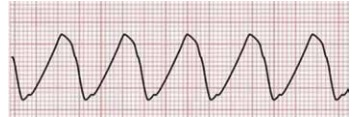
A Hipercalemia acentuada e refratária.
B Acidose metabólica grave e refratária.
C Pericardite urêmica com tamponamento.
D Sobrecarga volêmica com congestão pulmonar.
Revisar: possível letra faltando em enunciado
Questão 79 · Tratamento da hipercalemia · 4000121875Os medicamentos usados no tratamento da hipercalemia têm os seguintes mecanismos de ação: I. Estabilização da membrana elétrica da célula miocárdica; II. Translocação de potássio para o meio intracelular; III. Remoção de potássio. A CORRETA relação entre os mecanismos de ação e as drogas é:
A Poliestireno sulfonato de cálcio: III; salbutamol: II; gluconato de cálcio: I.
B Poliestireno sulfonato de cálcio: I; salbutamol: II; gluconato de cálcio: III.
C Poliestireno sulfonato de cálcio: II; salbutamol: I; gluconato de cálcio: III.
D Poliestireno sulfonato de cálcio: III; salbutamol: I; gluconato de cálcio: II.
E Poliestireno sulfonato de cálcio: II; salbutamol: III; gluconato de cálcio: I.
Questão 80 · Causas de Hipercalemia · 4000058916São medicamentos que podem levar à hiperpotassemia, EXCETO:
A Valsartana
B Heparina
C Trimetoprima
D Espironolactona
E Fenoterol
Questão 81 · Causas de Hipocalemia · 4000045768Mulher de 60 anos, hipertensa e diabética, em uso de hidroclorotiazida, losartana, AAS e metformina, apresenta vômitos, diarréia com produtos patológicos, febre e perda de peso, há 3 dias. Exame físico: estado geral regular, desidratada, descorada, pa 80 x 50 mmhg, fc 120 bpm, fr 32 irpm, abdome doloroso, com rha aumentados. Exames laboratoriais: creatinina: 1,9 mg/dl; ureia 115 mg/dl; sódio 130 mmol/l; potássio: 2,8 mmol/l; ph 7,48; hco3 29 meq/l; paco2 40 mmhg, pao2 60 mmhg e sato2 88% em ar ambiente. As causas mais prováveis da hipopotassemia são:
A Hipoxemia e insuficiência renal.
B Diarreia, metformina, insuficiência renal, alcalose metabólica.
C Diarreia, metformina, hiponatremia, perda de suco gástrico causada pelos vômitos.
D Diarreia, desidratação, diurético tiazídico e alcalose metabólica.
E Hipoxemia, diurético tiazídico, losartana e alcalose metabólica.
Questão 82 · Hipoaldosteronismo hiporreninêmico · 4000045475Paciente de 50 anos, portador de DM, apresenta clearance de creatinina de 50 ml/min e evolui com potássio de 6,0 mEq/L (normal 3,5 – 5,0). É causa comum de hipercalemia nessa população:
A Uso de metformina.
B Doença renal crônica (a partir de estágio II).
C Acidose tubular tipo II.
D Acidose tubular tipo IV (hipoaldosteronismo hiporreninêmico).
E Pseudo-hipercalemia.
Questão 83 · Tratamento da Hipocalemia · 4000028985No adulto clinicamente estável com potássio sérico de 2,5mEq/L, qual é a velocidade máxima de infusão de potássio (mEq/h) recomendada? Considerando paciente adulto com monitorização eletrocardiográfica contínua.
A 10.
B 20.
C 30.
D 40.
Questão 84 · Manif estações clínicas · 4000018030Julgue o item a seguir a respeito dos diuréticos e dos distúrbios hidroeletrolíticos. Alteração eletrocardiográfica, em hipocalemia, dispensa confirmação sérica de hipocalemia.
A Certo.
B Errado.
Questão 85 · Tratamento da Hipocalemia · 4000018021Julgue o item a seguir a respeito dos diuréticos e dos distúrbios hidroeletrolíticos. A reposição de potássio endovenoso é obrigatória em hipocalemias com alterações eletrocardiográficas.
A Certo.
B Errado.
Questão 86 · Hipocalemia · Causas de Hipocalemia · 4000012439Qual o distúrbio hidroeletrolítico mais comumente relacionado à hemodiálise?
A Hipocalemia.
B Hipercalemia.
C Hiponatremia.
D Hipernatremia.
Questão 87 · Tratamento da hipercalemia · Hipercalemia · 4000005644Quadros de desequilíbrio eletrolítico podem se tornar graves e ameaçar a vida. Das alternativas apresentadas, aponte aquela que PODE ser considerada inadequada.
A Para fins de conduta clínica, não é o potássio corporal total que determina a gravidade da alteração do potássio.
B Ventilação influencia no valor sérico do potássio
C Outras situações metabólicas podem também alterar a repolarização, além de variações séricas do potássio.
D Gluconato de cálcio abaixa os valores séricos do potássio.
Questão 88 · Distúrbios do potássio · 4000043007Sobre os distúrbios do metabolismo do potássio, assinale a afirmativa errada:
A A hipercalemia caracteriza-se no eletrocardiograma com a presença de ondas U, achatamento de onda T, depressão do segmento ST, atividade elétrica sem pulso ou assistolia.
B A hipercalemia pode ser causada por acidose metabólica, uso e medicamentos anti inflamatórios não esteroidais, antihipertensivos IECA, hemólise, rabdomiólise, síndrome da lise tumoral, etc.
C O uso de gluconato de cálcio intravenoso é indicado quando houver qualquer alteração eletrocardiográfica, independente do nível sérico do potássio.
D Hipocalemia pode ser causada por alcalose metabólica, anfotericina B, insulinoterapia, reposição de vitamina B12 e/ou folato na anemia megaloblástica.
E Nas hipocalemias graves, podem surgir fraqueza generalizada e até tetraplegia flácida, íleo paralítico, extra- sístoles ou taquiarritmias.
Questão 89 · Diagnóstico da Hipocalemia · 4000042884Paciente AP, 50 anos, SIDA, internado com quadro de leishmaniose visceral, em tratamento com Anfotericina B, com quadro de hipocalemia refratária à reposição endovenosa. Encontra-se clinicamente estável, afebril, sem náuseas, vômitos ou diarreia. Qual das condutas a seguir deverá ser instituída imediatamente, visto que o paciente apresenta os seguintes exames: Creatinina 0,5 mg/dl; Ureia: 23 mg/dl; Sódio 142 mEq/dl; potássio: 3,0 mEq/dl; Hb:10; Ht:31.
A Troca do esquema anti-retroviral.
B Dosagem de magnésio.
C Suspensão da anfotericina.
D Acesso central e aumentar a concentração de potássio na reposição.
E Diurético de alça.
Questão 90 · Hipercalemia · 4000034626Alterações graves do equilíbrio eletrolítico são potencialmente ameaçadoras da vida, sendo muito comum o encontro, nessa situação, de alterações da concentração do potássio, dosado a nível sérico.Todas as alternativas abaixo são adequadas, EXCETO uma. Assinale-a.
A O principal determinante da gravidade é a velocidade da variação do potássio sérico.
B A maioria do potássio corporal é intracelular.
C Beta-2-agonista, diminui hipercalemia.
D A variação do pH para a acidêmia aumenta o potássio corporal.
Questão 91 · Tratamento da hipercalemia · 4000018776Paciente com doença renal crônica, anúrica, em hemodiálise há cinco anos, procura a emergência com queixas de fraqueza muscular generalizada e incapacidade para deambulação. A avaliação laboratorial evidencia: creatinina = 5,0 mg/dl; ureia = 120 mg/dl; potássio = 7,5 mEq/L; pH = 7,34; bicarbonato = 22. O eletrocardiograma apresenta ondas T apiculadas e achatamento da onda P. A conduta para reduzir mais rapidamente a concentração plasmática de potássio, nesse paciente, é a:
A Administração intravenosa de gluconato de cálcio.
B Administração intravenosa de diurético de alça.
C Administração por nebulização de agonista beta-2 adrenérgico.
D Administração oral e por enema retal de resina de troca.
Questão 92 · Manif estações clínicas da hipercalemia · Hipercalemia · 4000012996Um paciente portador de insu ciência renal crônica, em fase pré-dialítica, apresentou, em exame bioquímico de rotina para seguimento, ureia de 98 mg/dl; creatinina de 3 mg/dl e potássio de 6,3 mEq/L. É hipertenso, controlado com medicamentos, e apresentou-se taquicárdico, respectivamente com PA: 145 x 95 mmHg e FC: 110 bpm. Referiu mal-estar geral, mas sem sinais ou sintomas específicos de alguma morbidade. O exame físico não revelou outras alterações. Com base nesse caso hipotético, a conduta deve ser complementar à avaliação, com realização prioritária de:
A Ecocardiograma.
B Tomografia computadorizada renal.
C Angiorressonância renal.
D Eletrocardiograma.
E RX de tórax.
Questão 93 · Absorção de potássio pelas células · 4000088469A hipocalemia ocorre pela redistribuição do potássio entre os compartimentos intra e extracelular em qual das situações abaixo?
A Alcalose metabólica.
B Acidose tubular renal.
C Uso de diurético de alça.
D Hiperaldosteronismo.
E Uso de betabloqueadores.
Questão 94 · Causas de Hipercalemia · 4000079979A única que NÃO pode ser considerada causa de pseudo-hiperpotassemia é:
A Hemólise in vitro.
B Acidose.
C Trombocitose.
D Eritrocitose.
E Leucocitose.
Questão 95 · Causas de Hipocalemia · Causas de alcalose metabólicas · Diagnóstico da Hipocalemia · 4000031235Um homem, de 60 anos, encontra-se no segundo dia de pós-operatório de laparotomia, com sonda nasogástrica aberta. O balanço hídrico mostra uma perda de 2.800 ml de secreção gástrica nas últimas 24 horas. O paciente encontra-se estável hemodinamicamente, bem hidratado e com boa diurese. Qual o distúrbio eletrolítico e acidobásico esperado?
A Hipopotassemia e alcalose metabólica
B Hiponatremia e alcalose respiratória
C Hipernatremia e acidose respiratória
D Hiperpotassemia e acidose metabólica
Questão 96 · Causas de Hipocalemia · 4000030519Paciente 42 anos, hipertensa e diabética, faz uso de hidroclorotiazida, captopril e metformina. Admitida com quadro de vômitos, diarreia com muco e febre há 4 dias. Ao exame físico, apresenta regular estado geral, desidratada, PA = 100 x 60 mmHg, FC = 100 bpm, FR = 28 ipm; abdome doloroso sem sinais de irritação peritoneal. Exames laboratoriais: Creatinina = 2,3 mg/dl; Ureia = 132 mmol/ml; Potássio = 2,6 mmol/ml; Sódio = 130 mmol/ml; pH = 7,49; Bicarbonato (HCO3) = 26 mEq/L; PaCO2 = 46 mmHg, PO2 = 70 mmHg e SatO2 = 91%. As possíveis causas da hipocalemia são:
A Diarreia, diurético tiazídico e alcalose metabólica.
B Hipoxemia e insuficiência renal.
C Metformina, hiponatremia e perda de suco gástrico causado pelos vômitos.
D Hipoxemia, diurético tiazídico e captopril.
E Diarreia, metformina e uremia.
Questão 97 · Tratamento da Hipocalemia · 4000013732Num paciente em pós-operatório de gastrectomia total, você é orientado a garantir um suporte calórico de 400 kcal em 24 horas, pois o mesmo permanecerá em dieta zero. Dispondo, para isso, de ampolas de 10 ml de SG 50% (glicose anidra) para serem distribuídas na hidratação com soro siológico que o paciente receberá. No dia seguinte, você identi ca nos exames um nível de potássio de 2,1 mg/dl, sintomático, e com alteração eletrocardiográfica. Neste caso:
A É necessária reposição rápida de potássio, com velocidade superior a 40 mEq/h.
B Caso a reposição seja feita em veia periférica, deve-se usar idealmente soluções com concentração inferior a 40 mEq/L.
C O cálculo da reposição deverá ser feito de maneira muito precisa, utilizando-se das fórmulas disponíveis, validadas e confiáveis.
D Em hipótese alguma repor magnésio junto, ou antes, da correção do potássio sob risco de agravamento da hipocalemia.
E Devido à alteração eletrocardiográfica identificada, deve-se administrar imediatamente gluconato de cálcio para estabilização da membrana celular e prevenção de arritmias graves.
Revisar: possível letra faltando em enunciado
Questão 98 · Causas de Hipocalemia · Hipocalemia · 4000000463Das causas abaixo de insuficiência renal aguda, qual a que mais frequentemente está associada à hipocalemia?
A Nefrotoxicidade por anfotericina B.
B Sépsis.
C Rabdomiólise.
D Nefrotoxicidade por contraste.
E Pós-operatório de cirurgia cardíaca.
Questão 99 · Tratamento da Hipocalemia · 4000084005Qual é a conduta correta em uma criança com cirrose e ascite recorrente, cujos exames de rotina mostram Na+ 128 mEq/L e K+ 2,5 mEq/L?
A Repor sódio pelo risco de edema cerebral.
B Não repor potássio, é uma hipopotassemia dilucional, portanto relativa.
C Repor potássio e não repor sódio.
D Não repor potássio, nem sódio.
E Administrar albumina para melhorar a pressão osmótica, e consequentemente a estabilização dos níveis de sódio e de potássio.
Questão 100 · Manif estações clínicas · 4000032278Paralisia flácida, hiporreflexia, hipercapnia, tetania e rabdomiólise podem ocorrer em casos de: Respostas: 1 12 23 34 45 56 67 78 89 100
A Hipercalemia;
B Hipercalcemia;
C Hipocalcemia;
D Hipofosfatemia;
E Hipocalemia.